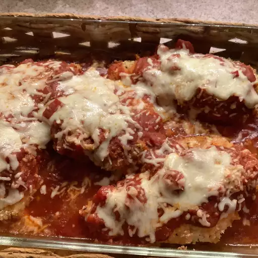

Chicken Parmesan Baked Ziti

Easy to make, but tasted nothing like Chicken Parm. It was just pasta, pieces of chicken, cheese and pasta sauce. Boring.
Ingredients
- cooking spray
- 1 (16 ounce) package ziti pasta
- 2 tablespoons butter
- 3 pounds skinless, boneless chicken breasts, cut into bite-sized pieces
- salt and ground black pepper to taste
- 2 (24 ounce) jars pasta sauce
- 4 (8 ounce) packages shredded mozzarella cheese
- 2 cups grated Pecorino Romano cheese
Steps
- Preheat the oven to 350 degrees F (175 degrees C). Spray two 9x13-inch baking dishes with cooking spray.
- Bring a large pot of lightly salted water to a boil. Cook ziti in the boiling water, stirring occasionally, until tender yet firm to the bite, 9 to 11 minutes. Drain.
- While pasta cooks, melt butter in a large skillet over medium heat. Add chicken and season with salt and pepper. Cook and stir until chicken is browned and no longer pink in the center, 5 to 7 minutes.
- Combine pasta, pasta sauce, and chicken in a large dish. Spread 1/4 of pasta mixture in each 9x13-inch dish. Top each with 2 cups (8 ounces) of mozzarella cheese and 1/2 cup Pecorino Romano cheese. Repeat with another layer of pasta and cheeses.
- Bake in the preheated oven until hot and bubbly, about 25 minutes.